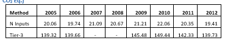

# Overlap Method
#
# Tier 1 direct N2O estimates (MMT CO2 eq) from 1990-1999
T1.recalc = c(90.50, 87.16, 88.38, 93.16, 87.92, 89.76, 89.40, 90.27, 96.25, 88.48)
# Tier 1 direct N2O estimates (MMT CO2 eq) from 2000-2012
T1.overlap = c(91.33, 93.52, 90.61, 93.74, 99.11, 93.96, 92.45, 98.76, 96.81, 99.33, 103.28, 95.28, 90.87)
# Tier 3 direct N2O estimates (MMT CO2 eq) from 2000-2012
T3.overlap = c(136.90, 138.81, 137.03, 139.09, 145.45, 139.32, 139.66, 145.63, 142.38, 145.48, 149.44, 142.33, 139.73)
n = 2012 #last year in the overlap period
m = 2000 #first year in overlap period
# calculate the value inside the parentheses from equation 5.1 in IPCC GL CH 5
valIP = 1 / (n - m + 1)*sum (T3.overlap/T1.overlap)
valIP
# Tier estimates for 1990 - 1999 using overlap method, (looking at this because we are filling in the table that has the missing values in part 2 of hw)
T3.recalc = T1.recalc * valIP
# complete Tier 1 direct N2O estimates (MMT CO2 eq) from 1990 - 2012
T1.1990.2012 = c(T1.recalc, T1.overlap)
# Actual Tier 3 estimates using DAYCENT for 1990-1999
T3.actual = c(135.81, 134.32, 134.61, 134.77, 132.02, 133.34, 134.14, 133.32, 140.36, 133.08)
# complete Tier 3 direct N2O estimates (MMT CO2 eq) from 1990-2012
T3.1990.2012 = c(T3.actual, T3.overlap)
# graph values
years = 1990:2012
years.recalc = 1990:1999
plot (x = years, y = T1.1990.2012, type = "l", lwd = 4, col = "chartreuse",
xlim = c(1990,2012), xlab = "Year", ylim = c(0,160),
ylab = "N2O Emissions (MMT CO2 Eq)", main = "Direct N2O Emissions from US cropland (MMT CO2-eq) \n
Overlap - Consistent Relationship")
lines (x = years, y= T3.1990.2012, lty = 1, lwd = 4, col = "lightblue")
lines ( x= years.recalc, y = T3.recalc, lty = 2, lwd = 4, col = "darkgreen")
legend("bottomleft", c("Tier-1 Method", "Tier-3 Method", "Splice"),
lwd = c(4,4,4), lty = c(1,1,2),
col = c("chartreuse", "lightblue", "darkgreen"))Addressing Data Gaps
This project used good practice to ensure consistent activity data when conducting greenhouse gas inventories and resolving data gaps. Several different methods were applied including:
Overlap method
Surrogate data method
Simple linear interpolation and extrapolation
Regression models
Overlap method R Script
This project used the IPCC 2006 guidelines overlap method to recalculate the emission estimates from 1990-1999, approximating the values for a Tier 2 method.
Surrogate Data Method R Script
2005-2012 data was provided for direct N2O emissions using a Tier 3 method. We assumed that N2O emission estimates were missing for 2007 and 2008.

# Part 3: Surrogate Data Method (the simple version, the surrogate data helps us to approximate missing emissions estimates)
# Q6 on hw
T3.2008 = 145.48*(20.67/21.21) #145.48 were the emissions in 2009 in the chart and adjusting it based on the ratio of the fertilizer (N inputs) in 2009
# Q7 on hw
T3.2007 = 139.66*(21.09/19.74)Simple Linear Interpolation and Extrapolation R Script
This R script contains a simple linear model associated with BTUs from coal production.
# Part 4: Simple Linear Interpolation/Extrapolation
# Trend extrapolation, extending the time series
year.2010 = 2000:2010
coal = c(90.54, 94.7, 95.43, 102.65, 110.95, 118.28, 125.76, 131.11, 135.47, 138.4, 147.96)
lm.fit <- lm(coal~year.2010)
summary(lm.fit)
#when looking at the model output from the summary: for every year,
#we are going up by ~6 Quadrillion BTUs on avg based on this linear model)
# Q11 on hw
coal.2011.2014.extrapolated <- lm.fit$coefficients[1]+
lm.fit$coefficients[2]*(2011:2014)
coal.2011.2014.actual <- c(157.99, 163.02, 164.02, 163.81)
#the [1], [2] mean there is a coefficient for the intercept and the time. So first I want to pull out the intercept [1], and then time [2]
coal.2000.2014 <- c(coal,coal.2011.2014.actual)
year.2014 = 2000:2014
plot(x = year.2014, y = coal.2000.2014, ylim = c(80,180), pch=16, col = "dark orange",
ylab = "Coal Production (Quadrillion BTUs)", xlab = "Year",
xlim = c(2000,2014), main = "World Coal Production")
abline (a = lm.fit$coefficients[1], b = lm.fit$coefficients[2],
col = "light pink", lty = 2, lwd = 2)
points(x = 2011:2014, y = coal.2011.2014.extrapolated, pch = 16, col = "maroon")
legend("topleft", c("Actual", "Extrapolation"),
pch = c(16,16), lty = c(NA, NA),
lwd = c(NA, NA),
col = c("dark orange", "maroon"))Regression Model Approach With Surrogate Data R Script
This part produces a time series of global coal production data from 1980-2021. The dataset we were orginally given contained data only out to 2014. This is where I used the surrogate data method to fill the data gap and then estimate emissions.
#we are going to use GDP as surrogate data to predict coal production)
# Q13 on hw (Trend extrapolation w/ surrogate data (GDP))
Coalproduction <- read.csv("WorldCoalProduction.csv", header = TRUE)
cor(x=Coalproduction$coal[1:35], y=Coalproduction$GDP[1:35])
lm.fit <- lm(Coalproduction$coal~Coalproduction$GDP) #we are saying that coal production is a function of GDP (because of the tilda (~))
summary(lm.fit)
# let's take the model from summary(lm.fit) and we are going to create a data frame that inclues coal production and the coal production predictor
coal.production.predicted <- lm.fit$coefficients[1] +
lm.fit$coefficients[2]*(Coalproduction$GDP)
Coalproduction <- cbind.data.frame(Coalproduction, coal.production.predicted)
plot(x = Coalproduction$year, y = Coalproduction$coal,
type="l", lwd = 4, col = "light green",
ylab = "Coal Production (Quadrillion BTUs)", xlab = "Year",
xlim = c(1980, 2021),
ylim = c(65,190),
main = "World Coal Production")
points (x = Coalproduction$year,
y = Coalproduction$coal.production.predicted,
pch = 16, col = "red")
legend ("topleft", c("Actual Estimates", "Model Estimates"),
pch = c(NA, 16), lwd = c(4,NA),
col= c("light green", "red"))